La 8K déjà accessible grâce à l’intelligence artificielle
Leader depuis 12 ans sur le marché de la télévision, Samsung dévoile les 3 téléviseurs QLED 8K de sa gamme Q9000R.
S’appuyant sur le processeur Quantum Processor 8K et l’intelligence artificielle, ces télévisions sont capables d’upscaler n’importe quel flux vidéo pour l’afficher en 8K, que la source soit en SD, HD, Full HD ou même Ultra HD.
Entraîné par une immense banque de données, l'algorithme génère des filtres - 200 à ce jour - qui sont ensuite appliqués sur l’image. Grâce à cela, plus besoin d’attendre que le contenu 8K natif se démocratise. L’image est immersive, incroyablement lumineuse et détaillée.
La résolution 8K affiche une luminosité de 4000 nits (sur le modèle 85 pouces) une technologie déjà utilisée par les studios de cinéma, et génère 4 fois plus de pixels qu’une télévision 4K UHD. Samsung a également reçu pour ces téléviseurs la certification officielle HDR10+ qui permet une évolution en temps réel de la qualité de l’image affichée.
Les TV QLED 8K de Samsung intègrent le mode Ambiant et sont toujours dotés du câble unique, regroupant l’alimentation et le cable optique, qui relie la TV au boitier One Connect. Disponibles en 65, 75 et 85 pouces, ces TV ne demanderont qu’un recul de 1,5 mètres pour être regardées.
Précommande dès le 20 septembre sur boulanger.com
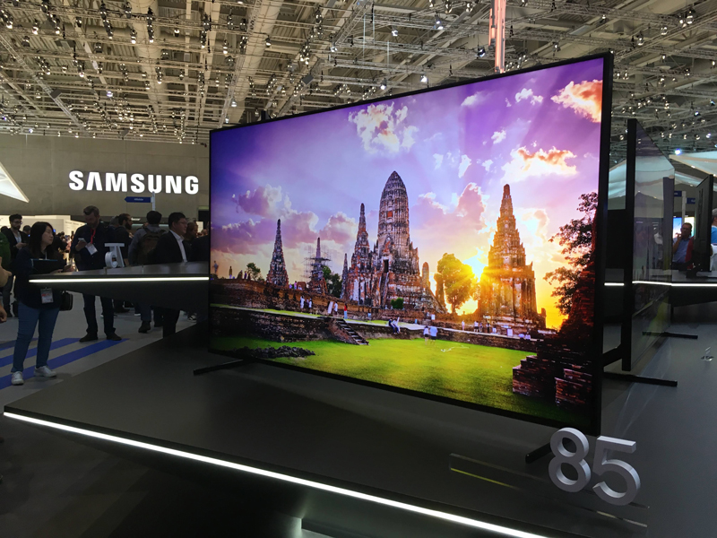
Polaroid, Mint et Mint 2-en-1
Une caméra digitale instantanée et une imprimante de poche
Depuis plus de 80 ans, Polaroid propose des appareils simples d’utilisation, faciles à transporter et qui rapprochent les gens. La nouvelle gamme Mint ne fait pas exception.
Sur le salon, nous avons pu découvrir et tester les 2 appareils. Le premier, le Mint 2-en-1 permet de capturer et d’imprimer instantanément l’image au format 2x3’’. À la manière d’un smartphone, il est possible de mettre un timer, le flash et de choisir entre 6 filtres. L’image est capturée grâce aux 16 mégapixels de l’appareil et pour l’impression, Polaroid utilise la technologie ZINK® Zero qui protège la photo de l’humidité, de l’exposition aux rayons UV et de la décoloration. Grâce au port MicroSD, il est également possible d’utiliser le Mint 2-en-1 pour sauvegarder vos clichés ou pour imprimer des photos prises depuis un autre appareil.
La seconde nouveauté est l’imprimante Polaroid Mint qui mesure à peine 11 cm de hauteur pour 1,8 cm d’épaisseur, de quoi en faire l’une des imprimantes portables les plus compactes du marché. Avec sa connectivité Bluetooth il sera possible d’imprimer les photos prises avec votre smartphone en moins d’une minute, toujours avec la technologie ZINK® Zero. Son autonomie permet d’imprimer environ 50 photos. L’application Polaroid Mint propose même d’éditer les photos ou d’ajouter des filtres avant l’impression.
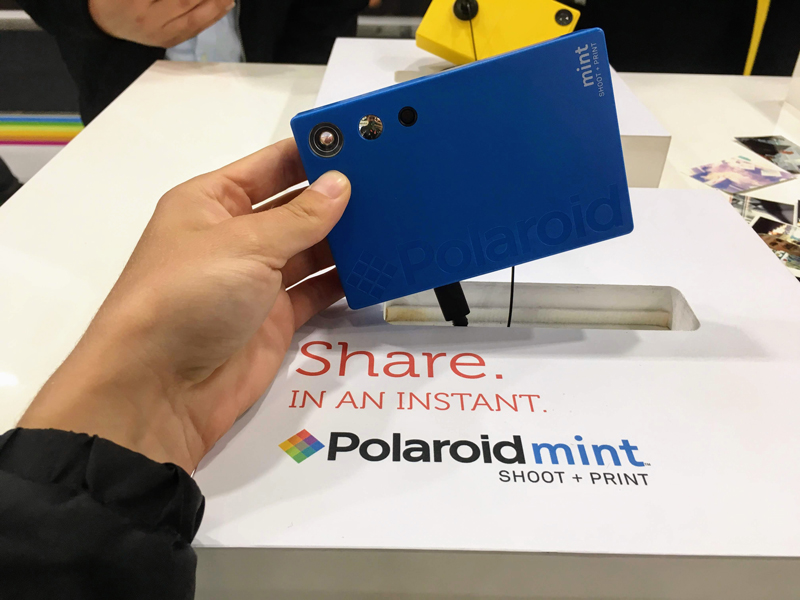
Bose, l’enceinte intelligente Home Speaker 500
Ses spécificités la rendent unique au monde
Le géant du son Bose dévoile sa nouvelle enceinte à commande vocale dotée d’Amazon Alexa, la Home Speaker 500. Cette enceinte se distingue par ses composants, notamment les 8 micros qui permettent d’entendre toutes les demandes même dans un environnement bruyant. Disposant du plus large espace sonore de toutes les enceintes intelligentes, elle est unique.
Bose promet un son spatial grâce à deux hauts parleurs qui diffusent le son dans des directions opposées. Il suffit d’une seule enceinte pour profiter d’un son stéréo.
L’enceinte arbore un écran en couleur sur la façade sur lequel s’affichent les photos des albums et chansons en cours, comme sur les applications de streaming musicale. La Home Speaker 500 se connecte en Bluetooth ou Wi-Fi et s’appuie sur les services d’Alexa pour offrir un accès rapide à la musique, aux actualités et au contrôle vocal des objets connectés. Elle fonctionne également en multiroom, notamment avec les barres de son intelligentes SoundBar 500 et SoundBar 700, autres nouveautés de Bose.
Google Assistant ou encore AirPlay 2 seront intégrés au travers d’une prochaine mise à jour.
La marque a profité de l’IFA 2018 pour présenter sa première enceinte intelligente. Si le concept nous a séduit, c’est parce qu’en plus d’intégrer Amazon Alexa, cette enceinte connectée fait également office de routeur 4G grâce un port permettant d'insérer une carte SIM.
Côté design, l’enceinte AI cube se veut discrète pour se fondre facilement dans un intérieur. Quand au service vocal Alexa intégré, il répond à nos demandes, contrôle les objets connectés compatibles et nous fait profiter de centaines de services et de solutions de divertissement par le biais des Skills.
Grâce à cette enceinte, en plus de pouvoir écouter de la musique et de profiter des services d’Alexa, on bénéficie d’une connexion 4G jusqu’à 1200 Mbps. Et comme elle n’a pas besoin d’une prise secteur pour fonctionner, l’enceinte AI Cube est une enceinte nomade connectée.
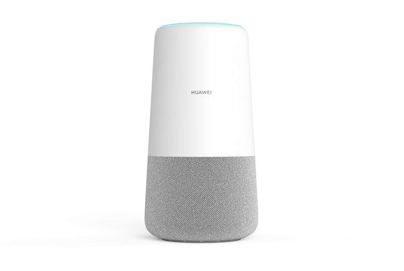
C-Way, Memoo
Un assistant connecté pour enfants
Conçu pour les enfants dès 3 ans, Memoo est un assistant domestique d’un nouveau genre. C-Way propose ici un produit permettant à l’enfant de gagner en autonomie.
Memoo ne ressemble pas à une enceinte intelligente traditionnelle mais plutôt à une veilleuse. Composée d’un micro, d’une coque antichoc et hypoallergénique elle se connecte en Wi-Fi et Bluetooth. Elle intègre un service météo et un agenda pour permettre aux enfants de recevoir des rappels.
En parallèle, Memoo propose de précharger des comptines ou histoires à écouter. Elle permet également aux enfants d’envoyer des SMS à leur parents via l’assistant vocal. Niveau sécurité, ce sont les parents qui contrôlent l’assistant depuis l’application mobile dédiée.
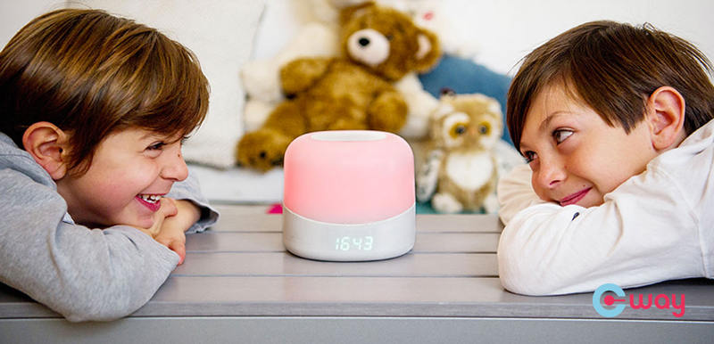
Familink et Lovebox
2 objets connectés coup de coeur
Si les objets connectés améliorent notre quotidien, ils permettent aussi de partager un peu d’amour et de jolies attentions à nos proches. La preuve avec 2 objets coup de coeur.
Le premier, le cadre Familink est un système de partage de photos avec les seniors qui n’aurait pas d’accès à internet à la maison ou qui ont du mal à s’en servir. Le principe est simple et aucun paramétrage n’est nécessaire. Il suffit de brancher le cadre sur une prise secteur, un abonnement 3G est inclus, déjà paramétré et activé. Ce dernier permettra à vos grands parents de recevoir directement sur leur cadre les photos que vous enverrez depuis votre PC ou votre smartphone.
Le second objet est la Lovebox, une boite à amour connectée qui permet de partager des attentions uniques. Derrière ce concept, 2 français qui ont pour ambition de redéfinir la façon dont nous communiquons via les technologies. Il suffit d’écrire un message depuis l’application et de l’envoyer. Une fois que la Lovebox l’aura reçue, le coeur tournera jusqu’à ce que le message soit lu. Pour découvrir le message il suffit de soulever le couvercle ! 💘
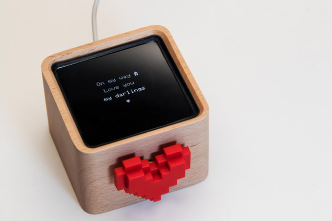
Segway, Drift W1
Une paire de rollers nouvelle génération
Annoncé quelques semaines avant le salon, c’est toutefois pendant l’IFA 2018 que nous avons pu voir et essayer pour la première fois les rollers ou plutôt les « e-Skates » de Segway.
Il s’agit d’une paire de rollers qui ressemble à des hoverboards miniatures. Il suffit de poser le pied sur l’une des plateformes pour les utiliser. Si les premiers mètres s’avèrent difficiles, on s’y fait rapidement grâce à la stabilisation gyroscopique, la même que sur les gyropodes.
En réalité, avoir les 2 pieds indépendants permet de faire des écarts, de tourner et les plus courageux pourront même s’essayer à quelques figures acrobatiques. Sur ces Drift W1 on se déplace jusqu’à 12 km/h pendant environ 45 minutes. Niveau transportabilité, chaque e-Skate mesure environ 30 cm de long et pèse 3,5 kg.
Ubtech, Alpha 1E et Alpha Mini
Des robots compagnons programmables
Ce qui nous a attiré sur le stand de Ubtech c’est de voir une demi douzaine de petits robots en train d’effectuer une chorégraphie en parfaite synchronisation.
Le robot Alpha 1E semble être l’évolution directe de l’Alpha 1S commercialisé 2 ans plus tôt. Ubtech propose un compagnon intelligent, haut d’environ 40 centimètres, capable de divertir, de communiquer et même d’apprendre aux enfants à coder. Drôle, il sait danser, faire du kung-fu et donner des leçons de Yoga. Il est équipé d’un haut parleur stéréo, d’un microphone et de plusieurs capteurs dont un sensoriel.
Version plus adaptée pour les enfants, le robot Alpha Mini propose davantage de fonctionnalités basées sur la communication comme les appels vocaux, vidéos et même la lecture audio de messages textes grâce à la 4G intégrée. Il est capable de reconnaître les visages et donc les émotions, les objets et de dispenser des leçons de mathématiques, de langues et de programmation. Alpha Mini propose aussi du divertissement en diffusant de la musique et des histoires.
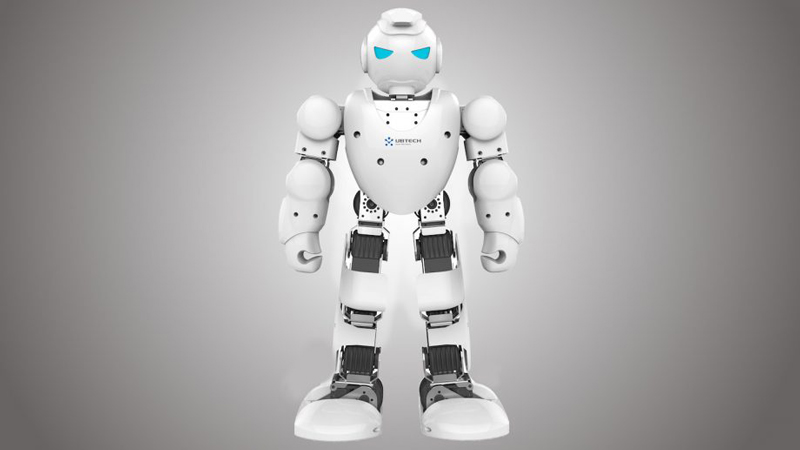
LG G7 One
Le premier smartphone de la gamme sous Android One
LG présentait un nouveau modèle de sa gamme G, le LG G7 One sans surcouche qui tourne sous Android One. Grâce à cette version du système d’exploitation, ce smartphone améliore considérablement l’expérience utilisateur et proposera des mises à jour plus fréquentes.
Sur l’écran de 6,1 pouces d’une résolution HDR de 3120 x 1440 px, on retrouve l’encoche caractéristique des smartphones borderless, tendance design de 2018. Le LG G7 One embarque la puce Qualcomm Snapdragon 835, 4 Go de mémoire vive, 32 Go de stockage, et 3000 mAh pour la batterie.
Si ses caractéristiques techniques ne sont pas des plus récentes, LG propose tout de même ici un smartphone haut de gamme qui saura satisfaire la grande majorité des utilisateurs.
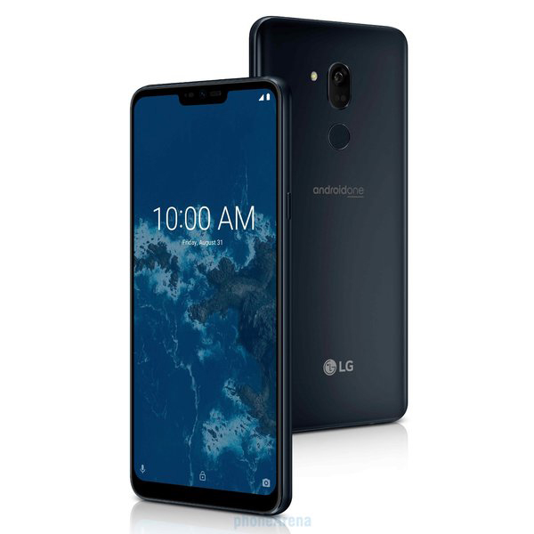
Lenovo, Yoga Book C930
Un ordinateur portable avec 2 écrans
Lenovo et son Yoga Book C930 ont fait forte impression lors de l’IFA 2018. Pour se démarquer, le constructeur a misé sur l’innovation avec un PC Portable muni d’un écran e-ink de 10,8 pouces à la place du clavier traditionnel.
Ce deuxième écran d’une définition Full HD peut toutefois être utilisé comme clavier ou liseuse mais s’utilise également pour dessiner et prendre des notes. L’une des fonctionnalités les plus étonnantes est la possibilité de réveiller l’ordinateur en tapant 2 fois sur la coque fermée.
L’écran principal est un écran tactile IPS LCD - de 10,8 pouces également. L’ordinateur embarque un processeur Intel Core I5 de 7e génération couplé à 4 Go de RAM et un SSD de 256 Go. Pour être clair, ce PC a du répondant. Niveau autonomie, Lenovo annonce 8 heures. Ultra fin et compact, le Yoga Book C930 est décidément l’un de nos favoris du salon.
Acer, Swift 5
L’ordinateur portable le plus fin du monde
Acer dévoile une nouvelle version de son PC portable Swift 5 qui renforce l’esprit nomade de la gamme.
Sa dalle IPS tactile de 15,6 pouces à la définition Full HD recouvre environ 88% de la face avant et ne laisse apparaître que des bordures très fines. Grâce à ses 990 grammes il est l’ordinateur portable de cette taille le plus léger au monde. Avec son poids plume et son épaisseur d’à peine 1,59 cm, le Swift 5 incarne la mobilité.
Son processeur Intel Core i5 ou i7 de 8e génération, son 1 To de mémoire SSD et ses 16 Go de RAM permettent d’affirmer que le Swift 5 est aussi performant que beau.
Samsung, Galaxy Tab S4
Un écran Super AMOLED qui en met plein les yeux
Lorsqu’on s’approche de la nouvelle tablette Galaxy Tab S4 de Samsung on ne peut que remarquer la qualité de son écran. Il faut dire que la dalle OLED de 10,5 pouces affiche une définition de 2560 x 1600 Pixels. Le taux de contraste est incroyable grâce à la technologie OLED et la restitution des couleurs est impeccable.
Sur cette tablette, Samsung garantit à la fois la productivité et le divertissement. On retrouve ainsi un ratio d’affichage de 16:10 pour voir les choses en grand et des haut-parleurs signés AKG avec la technologie Dolby Atmos. La batterie de 7300 mAh offrirait jusqu’à 16 heures d’autonomie en lecture vidéo. Enfin pour la productivité le mode multitâche est toujours aussi convaincant et le mode DeX permet de brancher la tablette à un moniteur grâce à un adaptateur HDMI. Autre point positif, Samsung a équipé sa Galaxy Tab S4 de la reconnaissance d’iris, un véritable atout pour protéger ses données.
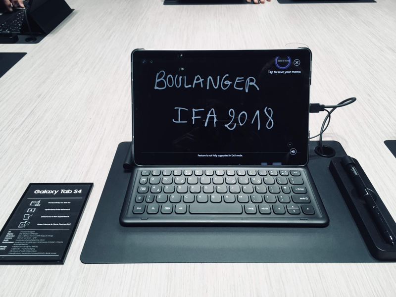
Asus, ROG Chimera
Un PC portable gaming avec une vitesse de rafraîchissement record
Proposé en démonstration lors de l’IFA 2018, le nouveau PC gaming d’Asus fait grimper l’expérience gaming sur ordinateur portable à son plus haut niveau. Asus avait déjà été le premier constructeur à proposer un taux de rafraichissement de 120 Hz sur laptop et il propose désormais une fréquence de 144 Hz pour un temps de réponse à 7 ms, une première sur un PC portable gaming.
Pour être capable de faire tourner les jeux les plus gourmands, l’Asus ROG Chimera intègre le processeur Intel Core i7-7820HK couplé à un GPU Nvidia GeForce GTX 1080 en plus de 64 Go de RAM, 1 To de SSD et 2 To de HDD. Autant de composants qui permettent de jouer aux jeux récents sans contrainte et avec une incroyable fluidité.
L’ordinateur de 17,3 pouces intègre également le Xbox Wireless, permettant de se connecter sans fil à une Xbox sans passer par la connexion Bluetooth.
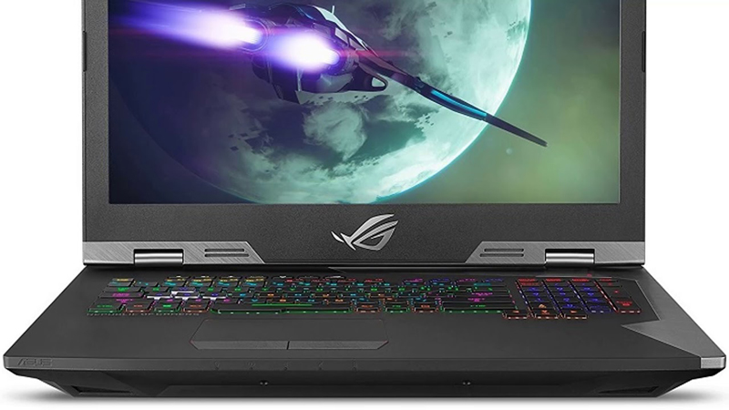
Acer, Predator Thronos
Un cockpit de gaming pour les plus passionnés
Grandiose. C’est le mot qui nous vient à l’esprit face au trône de gaming présenté par Acer. Baptisé le Predator Thronos il s’agit d’un cockpit capable d’accueillir 3 moniteurs de 27 pouces incurvés ou non. Le siège rembourré s’incline et émet des vibrations en lien avec l’action en cours dans le jeu.
S’il a de quoi faire rêver certain, encore faudra t-il pouvoir lui trouver une place dans votre salon car avec ces 220 Kg le Predator Thronos en impose.
Nous ne connaissons pour l’instant pas de date pour la commercialisation du Predator Thronos.
Acer, Predator Triton 900
Un PC portable gaming avec charnière
Entre originalité et puissance, le PC gamer Predator Triton 900 a de quoi plaire aux joueurs les plus exigeants. Cet ordinateur portable a la particularité d’avoir une charnière permettant à l’écran de s’orienter dans différentes positions, plutôt pratique pour trouver l’angle optimal.
Même si la fiche technique reste pour l’instant secrète, nous savons qu’il s’agit d’une dalle tactile 4K à vitesse de rafraîchissement de 144 Hz, compatible avec la technologie Nvidia G-Sync, on s’attend donc à un monstre de puissance.
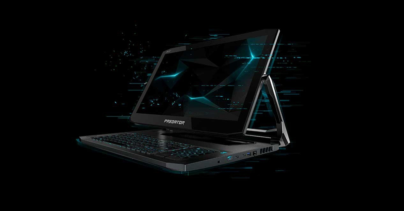
Gamme lave-vaisselle WaterWall
Un lavage parfait dans tous les angles
Avec toujours la promesse d’un gain de temps pour profiter davantage de votre famille, Samsung nous présente sa gamme de lave-vaisselle WaterWall. Grâce à sa technologie brevetée, de l’eau jaillit à haute pression par 6 buses situées à l’arrière de la cuve. Elle est ensuite projetée à la verticale sur un déflecteur coulissant permettant de créer un mur d’eau qui atteint tous les coins de votre lave-vaisselle.
Une option Booster permet d’obtenir un nettoyage encore plus profond de la vaisselle très sale comme des plats à gratins par exemple.
L’ouverture automatique de la porte en fin de programme permet de laisser entrer l’air afin de sécher plus efficacement la vaisselle.
Toujours pour gagner du temps, la gamme dispose d’un cycle de 55 minutes qui permet de laver votre vaisselle peu sale du quotidien (verres, couverts, assiettes).
Il bénéficie aussi d’un design épuré puisque son bandeau de commande est dissimulé sur la tranche intérieure de la porte.
Prendre soin de son linge en 2 fois moins de temps
Voilà la promesse de Samsung : un lave linge qui lave vite et bien ! J’ai été séduite par les différentes fonctionnalités que propose la gamme QuickDrive.
Un brassage du linge en profondeur pour éliminer toutes les tâches : grâce à 2 moteurs inverter, le linge est brassé du bas vers le haut mais également de l’arrière vers l’avant du tambour.
Un assistant de lavage intelligent qui suggère automatiquement les programmes optimums en fonction des informations fournies (couleurs, types de textiles…).
Un programme super rapide qui permet de laver 5 kg de linge en seulement 39 minutes.
Un moteur fiable et silencieux, qui en plus, prolonge la durée de vie du lave-linge… et d’autres fonctionnalités comme le programme nettoyage +, l’option anti-tâche ainsi que son design harmonieux finiront de vous convaincre.
La cuisine est le cœur de la maison avec la présence chez de nombreux fabricants de réfrigérateurs connectés. Le réfrigérateur connecté occupe une place très centrale dans les maisons intelligentes de LG et Samsung notamment. Il fait le lien entre les différents appareils connectés de la maison permettant ainsi de démarrer le cycle de nettoyage de l’aspirateur robot, de fermer les volets de la maison ou de communiquer au four les paramètres de cuisson correspondant à votre recette en cours.
Mais, le réfrigérateur n’est pas le seul appareil électroménager connecté de la maison bien au contraire. Déjà très présent les années précédentes, le lave-linge connecté occupe également une place importante chez Samsung, LG ou même Candy et Hoover. La hotte communique avec la table de cuisson chez Miele. Même la cave à vin est connectée.
Le truc en plus cette année, c’est la commande vocale intégrée à tous ces appareils. Google Assistant et Alexa n’ont pas fini de se faire une place dans notre quotidien ! Affaire à suivre…
Découvrez les réfrigérateurs connectés Samsung Family Hub.
Parce que la qualité de notre vie dépend de celle de nos nuits, il est très important de bien dormir. La start up Rythm nous présente Dreem, un bandeau qui interagit avec le cerveau pour nous aider à mieux dormir.
Dreem utilise le son pour vous aider à vous endormir, améliorer votre sommeil profond et vous réveiller lors d’une phase de sommeil léger. Des bruits roses sont diffusés par conduction osseuse (propagation du son jusqu’à l’oreille interne par les os du crâne) évitant ainsi le port des écouteurs.
L’application dédiée et compatible iOS/Android permet d’analyser vos données relatives à la qualité de votre sommeil mais également d'obtenir des conseils personnalisés
Coté confort, le bandeau est léger (120 g) et s’ajuste à tous types de têtes. Il s’oublie facilement une fois porté et n’est pas gênant pendant la nuit.
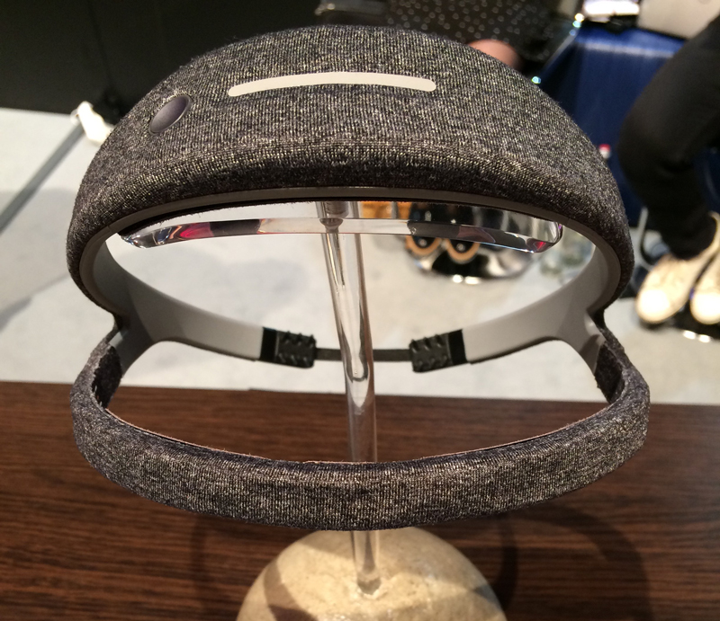
Bracelet Fitbit Charge 3
Un bracelet pour la forme et le sport
Près de 2 ans après la sortie du Charge 2, Fitbit nous présente son nouveau bracelet connecté avec la promesse d’apprendre à mieux vous connaître pour atteindre vos objectifs. Ce bracelet se rapproche d’une smartwatch sur de nombreux points : moniteur de fréquence cardiaque, tracking de natation, notifications de smartphone, capteur d’oxygène dans le sang… avec les fonctionnalités habituelles de tracking de marche à pied, d’activité et de sommeil.
Evolution par rapport à son prédécesseur, le charge 3 dispose d’une autonomie de 7 jours, d’une étanchéité de 50 mètres et d’un écran plus large entièrement tactile. De plus, sur les éditions spéciales, vous disposez de la fonctionnalité paiement sécurisé au poignet.
Niveau style, tout y est : bracelets classiques, cuir, sport et tissés, vous trouverez à coup sûr votre préféré !
Disponible début octobre chez Boulanger
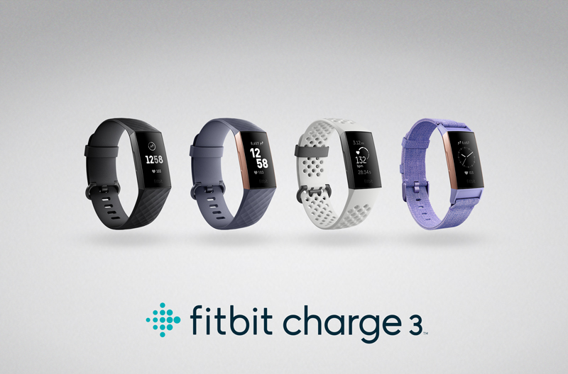
HiMirror mini premium
Le plus petit miroir intelligent au monde
Après le lancement du premier HiMirror en 2017, le fabricant nous présente son nouveau modèle plus compact, le HiMirror Mini Premium. Toujours dans une optique de prendre soin de soi, le miroir permet d’analyser votre peau à l’aide d’une simple photo. Vous pouvez évaluer les rides, ridules, cernes, taches sombres, boutons…. et adapter votre routine de soins en fonction de vos résultats pour atteindre vos objectifs. Vos photos ainsi que les mesures successives sont stockées permettant ainsi un suivi constant de vos progrès. Les résultats d’analyse vous permettent de comprendre et cibler les zones à problèmes.
Vous vous demandez si vos produits sont efficaces ? HiMirror vous permet de suivre les changements de votre peau au fil du temps pour voir ce qui fonctionne vraiment pour vous.
La trousse de beauté virtuelle vous propose les meilleurs produits pour votre peau en fonction des résultats et des conditions météorologiques locales. Les produits proviennent des bases de données Amazon, SkinSAFE et HiMirror.
De plus, le miroir est équipé d’un éclairage LED pour une application parfaite de votre maquillage où que vous soyez ! Vous pourrez également rester connecté sur les médias sociaux et écouter vos morceaux de musique favoris tout en vous préparant.
Pour ce cru 2018, le blender sous vide était à l’honneur chez de nombreux fabricants ! Et pour cause, il comporte de nombreux avantages. En plus de vous permettre de réaliser de délicieux smoothies et jus à base de fruits ou de légumes, il vous permet de conserver ces derniers sans altérer les nutriments et vitamines qu’ils contiennent. Vos jus favoris se conservent plus longtemps, merci la fonction mise sous vide !
Un autre avantage de cet appareil est l’utilisation de la fonction sous vide indépendamment du blender. Bosch et son VitaMaxx par exemple, propose des accessoires pratiques (boites de conservation et gourde) compatibles avec le système de mise sous vide. Un vrai outil polyvalent prévu pour le printemps 2019 !
Vu sur les stands de Kuvings et Bosch : la différence entre un jus fait au blender ou au blender sous vide. L’effet visuel est bluffant. Avec le blender sous vide, pas d’oxydation des aliments, le jus conserve donc sa belle couleur. Si le côté esthétique est appréciable, c’est surtout la conservation des nutriments qui fait la différence !
L’extracteur de jus et le programme personnalisé qui va avec !
Au-delà de proposer un très bon extracteur de jus capable de vous concocter de délicieux jus de fruits et de légumes bourrés de vitamines, cet appareil est capable de vous proposer un programme personnalisé en analysant votre « condition physique ». Grâce aux capteurs intégrés et à l’application dédiée, votre HeathFriend vous donne des indications sur votre masse musculaire, masse grasse, IMC, votre teneur en eau, en minéraux ou encore votre métabolisme de base.
Sur base de cette analyse, Kuvings vous proposera un programme personnalisé comportant des recettes adaptées à vos besoins à faire avec votre extracteur de jus. L’application pourra même vous recommander des activités physiques selon votre profil. Nous avons fait le test. Résultat : IMC, poids et métabolisme de base plutôt bon. Par contre, l’application nous recommande de manger moins salé pour rééquilibrer notre teneur en eau, de manger plus de légumes, de protéines et moins de pain et de pâtes. À bon entendeur, nous voilà repartis avec un nouveau régime alimentaire !
Cet extracteur de jus connecté est prévu pour début 2019 !
Le meilleur allié de nos soupes d’hiver était largement représenté cette année encore dans les allées de l’IFA. Si le blender chauffant est maintenant connu de tous, il ne cesse cependant d’évoluer pour s’adapter à nos besoins culinaires et nos habitudes alimentaires.
La première évolution intéressante concerne la capacité utile des blenders chauffants. La plupart des marques proposent maintenant des modèles approchant les 2L pour ainsi passer d’une capacité de 4 à 6 personnes. Un format plus familial pour répondre aux envies des gourmands ou des cuisiniers pressés qui conserveront le surplus de soupe pour le lendemain.
Le blender chauffant se dote également de fonctions supplémentaires pratiques pour varier les recettes et les saveurs. Aux fonctions « soupe », « velouté » et « mouliné » traditionnelles s’ajoute des fonctions « rissolage » pour précuire les oignons et les légumes ou encore « confiture ». Cette fonction, vue chez Domo, permet de chauffer à basse température. Votre confiture cuit en douceur et le sucre ne brûle pas au fond du bol. Voilà un moyen simple et rapide de se mettre aux confitures maison !
Rendez-vous début octobre pour craquer sur les blenders chauffants DOMO et ESSENTIELB qui vous offriront une capacité de 2L
En attendant l’arrivée de ces grandes capacités, découvrez notre sélection de blenders chauffants.